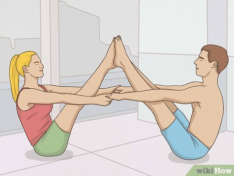

📖 Origin & Evolution
Tantra Yoga is a spiritual tradition that integrates the body, mind, and energy systems.
Rooted in the Tantras (ancient scriptures), this path emphasizes rituals, meditation, mantras, yantras, and kundalini awakening.
Unlike common misconceptions, Tantra is not limited to rituals of the external world but focuses on channeling energy within for spiritual liberation.
💡 Did You Know?
🕉 Tantra Yoga uses mantras (sacred sounds) and yantras (geometric diagrams) for meditation.
⚡ Kundalini Shakti (energy at the base of the spine) is central in Tantra practice.
🔥 Rituals like fire ceremonies (Homa) are part of Tantric traditions.
🌺 The Sri Yantra is considered the most powerful yantra symbol in Tantra.
🔮 Core Practices of Tantra Yoga
Mantra – Repetition of sacred syllables for focus and energy.
Yantra – Meditating upon sacred geometric patterns like Sri Yantra.
Kundalini – Awakening dormant energy at the base of the spine.
Chakras – Balancing and activating the body’s energy centers.
Mudras – Hand gestures channelizing energy.
Ritual Worship – Symbolic acts connecting the individual with cosmic forces.
🎯 Quick Quiz:
What is the main goal of Tantra Yoga?